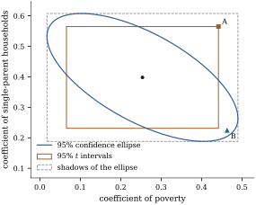

Two
intervals, one for each of two coefficients, do not make
a statement
about the pair, and they ignore the correlation between
the estimates. The natural joint region is an ellipsoid:
the set of values the test does not reject,
shaped like the covariance matrix of the estimates, with
shadows that are wider than the intervals. This
geometry explains an test that rejects while
every test
accepts, and the reverse.
12.2.1. The
ellipsoid
Let be
a matrix
of rank whose
columns lie in , so that every
entry of 𝛟𝛃
is estimable. Put 𝛟𝛃 By Theorem 9.2.4(a),
neither depends on the choices of 𝛃 and , and is positive definite.
By Theorem 7.5.1(a), 𝛟𝛟.
Theorem
12.2.1 (Confidence ellipsoid for 𝛃)
With the notation above, let
and
𝛟𝛟𝛟𝛟𝛟
(12.2.1)
(a) is an exact confidence set
for 𝛃.
(b) is a solid
ellipsoid centred at 𝛟.
If is a spectral decomposition,
its principal axes point along and
have half-lengths .
Its volume is
(c)(Duality
with the
test.) For , let
be the minimum of over
and let 𝛟𝛟 Then iff , that is, iff the level- test of 𝛃
does not reject.
Proof.
(a) Since is invertible, is its only
generalized inverse, and Corollary 7.5.3 with
gives 𝛟𝛟𝛟𝛟 at every parameter value. This is a pivot, and
𝛟 is the event that it is at most .
(b) Put and
write 𝛟𝛟.
Since ,
the defining inequality becomes , the
standard form of an ellipsoid with half-axes along . Equivalently 𝛟,
where is the ball
of radius
in . A
linear map multiplies volume by the absolute value of
its determinant, so the volume is
times the volume
of the unit ball.
(c) The two
expressions for agree by
Theorem 9.2.4(c),
and the equivalence is the definition of .
The statistic is the
statistic of the
general linear hypothesis in both of its forms (see Theorem 11.3.2),
and part (c) is Proposition 12.1.2
in concrete form. In particular the test of 𝛃
rejects iff the ellipsoid misses the origin.
In the full-rank case with , the region
for the whole coefficient vector is 𝛃𝛃𝛃 The second form says that is in the region iff
its fitted vector is close to the
least squares fit . This suggests
looking at the mean vector directly.
12.2.2. A ball in
the column space
Proposition
12.2.2 (Confidence ball for the mean
vector)
Let 𝛍𝛃 and .
The set 𝛍𝛍 is an exact confidence set
for 𝛍: a ball of
radius
in the -dimensional space , centred at the
fitted vector. Moreover, if for an
matrix
(such a exists by Theorem 8.3.1), the
image of
under 𝛍𝛍
is the set 𝛟𝛟𝛟𝛟𝛟 which contains the ellipsoid Eq. 12.2.1.
Proof.𝛍𝛃,
and is symmetric
idempotent of rank , so 𝛍
by Theorem 4.3.2(a),
independently of SSE (Theorem 7.5.1(c)).
Dividing by gives an
pivot, and
the first claim follows as before.
For the image, put , a matrix. For
𝛍,
𝛍𝛍, and
(Theorem 9.2.4(a)).
Also 𝛟.
So the image consists of the points 𝛟
with
and . If with
,
then , because is
symmetric and idempotent, hence a projection, and a
projection does not increase length (Proposition 6.3.4(d)).
Conversely, if , then
lies in , satisfies
,
and has .
For the containment it remains to show when . Let , and
be
independent. Then ,
so for every ,
. The upper point of the
variable on the left is , and
that of the one on the right is .
So all confidence ellipsoids are views of one ball
around in the
column space. Each linear summary 𝛃 maps the
ball to an ellipsoid, and since the ball covers 𝛍 with probability
, all the
images cover their targets simultaneously with
probability at least , at the price of
the constant in place
of . Section 12.4 takes and all directions at
once.
12.2.3.
Shadows
One inequality gives the extent of an ellipsoid in
every direction.
Lemma
12.2.3 (Extent of an ellipsoid)
Let be a
positive
definite matrix and . For every ,
attained at
when .
Consequently iff
for every .
Proof. The bound is Corollary 1.7.8(c)
with ;
directly, write .
By the Cauchy–Schwarz inequality, , with equality when
is a
nonnegative multiple of and
,
which is the stated . For the last
statement, “only if” follows from the maximum applied to
and
. For
“if”, take :
then , so .
Corollary
12.2.4 (Shadows of the confidence
ellipsoid)
For every , the
projection of
onto the line spanned by is the
interval 𝛟𝛟𝛟 and
is the intersection of the slabs 𝛟𝛟𝛟𝛟
over all . Hence, with
probability exactly , every one of
these intervals contains 𝛃.
Proof. Apply Lemma 12.2.3
to 𝛟𝛟
with . The
extreme values of 𝛟
over are
𝛟,
and the set of values in between is attained because
is convex.
The intersection statement is the last part of the
lemma. The final claim holds because the event “all
intervals cover” is the event 𝛟.
A shadow is a
interval with replaced
by .
The multipliers agree when (Exercise (A1))
and the shadow is wider when , as it must be:
the shadows hold simultaneously for all directions , including
directions chosen after seeing the data. This is
Scheffé’s method, developed in Chapter 13
(Theorem 13.2.2).
The box of one-at-a-time intervals undercovers,
and it disagrees with the ellipsoid in both directions:
a corner of the box can lie outside the ellipsoid, and
the ellipsoid pokes out of the box along its long
axis.
Example
(A joint region for two coefficients)
In the murder-rate regression of Example (Murder rates: coefficients and a mean),
take to
pick out the coefficients of poverty and single
parenthood, so ,
𝛟, and the correlation of the two
estimates is . The negative
correlation reflects the positive correlation of the
regressors: the data can credit murder to either, but
not to both at once. With , the
ellipse is
drawn in Figure 12.2.1.
The statistic for
𝛟
is , so the
origin is far outside.
The shadows of the ellipse on the two axes are and , wider
than the
intervals and by the factor .
Two points show how the ellipse and the box
disagree.
A, the
upper corner of the box. Neither test rejects, but A
raises both coefficients at once, against the
correlation, and the joint test rejects: , .
B, on the
long axis of the ellipse. Both statistics exceed ( and ), but B trades one
coefficient for the other, which the data cannot
resolve, and .
The ellipse and the box have similar areas ( and ) but different
shapes. In
simulated data sets from the fitted model the ellipse
covered the true pair in a proportion and the box in
only .

Figure
12.2.1. The confidence ellipse
for the poverty and single-parent coefficients, the box
of intervals, and the
ellipse’s shadows (dashed). A is inside the box but
outside the ellipse; B the reverse.
import numpy as npimport statsmodels.api as smfrom scipy import statsdata = sm.datasets.statecrime.load_pandas().datadata = data.drop(index="District of Columbia")y = data["murder"].to_numpy()X = np.column_stack([np.ones(len(y)), data[["poverty", "single", "urban"]]])n, p = X.shapeC = np.linalg.inv(X.T @ X)beta_hat = C @ X.T @ ys2 = np.sum((y - X @ beta_hat) **2) / (n - p)L = np.eye(p)[:, [1, 2]] # Lambda: the poverty and single coefficientsq = L.shape[1]phi_hat = L.T @ beta_hatW = L.T @ C @ L # Cov(phi_hat) / sigma^2Fq = stats.f.ppf(0.95, q, n - p)def F_stat(d):"""F statistic for the hypothesis Lambda^T beta = d.""" u = phi_hat - dreturn u @ np.linalg.solve(W, u) / (q * s2)def in_ellipse(d):return F_stat(d) <= Fqcorr = W[0, 1] / np.sqrt(W[0, 0] * W[1, 1])print(f"estimates {phi_hat}, correlation of the estimates {corr:.3f}")print(f"F({q}, {n - p}) 95% point {Fq:.3f}; F statistic for (0, 0): {F_stat(np.zeros(2)):.2f}")
tq = stats.t.ppf(0.975, n - p)se = np.sqrt(s2 * np.diag(W))t_box = np.column_stack([phi_hat - tq * se, phi_hat + tq * se]) # one-at-a-time t intervalsk = np.sqrt(q * Fq)shadow = np.column_stack([phi_hat - k * se, phi_hat + k * se]) # projections of the ellipseprint("t intervals:\n", t_box.round(3))print("shadows of the ellipse:\n", shadow.round(3), f"\nwider by the factor {k / tq:.3f}")
12.2.4. Two
cautions
The ellipsoid is for a question fixed in
advance. If the coefficients are chosen because
they look interesting, the ball of Proposition 12.2.2
or the methods of Chapter 13
are the honest tools.
Intervals after a test. If intervals
are reported only when a preliminary test of 𝛃
rejects, their coverage given the rejection is
no longer ,
and can be larger or smaller (Olshen 1973).
12.2.5.
Exercises
A. Check your
understanding
Exercise
(A1)
Show that for the ellipsoid Eq. 12.2.1 is
the interval Eq. 12.1.1.
Which fact about the distribution
does this use?
Solution. With , is a positive number
and the region is . If , then (Definition 4.1.3
and the remark after it), so and .
The region is .
Exercise
(A2)
For the straight line , write the confidence ellipse
for in
terms of , and . Show that in
the centred parameterization the axes of
the ellipse for are
parallel to the coordinate axes. When is it a
circle?
Solution., and the region is .
In the centred parameterization the cross-product matrix
is ,
so the quadratic form has no cross term, and the ellipse
has axes along the coordinates with half-lengths and
.
It is a circle iff , that is, iff
the have mean
square deviation one.
B. Practice
Exercise
(B1)
Take and let
be the
correlation of and . Show that
the area of the ellipse divided by the area of the box
of the two
intervals is so that it depends on the design only through
. Check it
against Example (A joint region for two coefficients),
where the areas are and at . For which
do
the two regions have equal area there, and what happens
to the ratio as the two regressors become collinear?
Solution. By Theorem 12.2.1(b)
the ellipse has area , and writing for the diagonal
entries of ,
.
The box has sides , so
area ;
divide. In the example and
give at , and
at ,
which is . The areas
agree when ,
that is .
With uncorrelated estimates the ellipse is the larger
region; as the regressors become collinear, , the
ratio tends to
and the ellipse becomes a thin needle across a large
box, which the joint region mostly excludes.
Exercise
(B2)
In Example (A joint region for two coefficients),
the hypothesis that one point of poverty and one point
of single parenthood have the same coefficient is the
line .
Using Lemma 12.2.3,
show that this line meets the ellipse iff .
Compare this with the test of . Which is
appropriate if the hypothesis was formulated before
seeing the data?
Solution. The line is 𝛟𝛟
with . By
Corollary 12.2.4,
the values of 𝛟
over the ellipse fill the interval 𝛟,
so the line meets the ellipse iff this interval contains
. The test uses the smaller
multiplier . It is
the right test for a hypothesis fixed in advance. The
ellipse criterion is the right one for a contrast chosen
after looking at the estimates, because it holds
simultaneously for all .
Exercise
(B3)
Let the columns of lie in but be linearly
dependent, with .
Show that
is singular, that 𝛟𝛟
with probability one, and that 𝛟𝛟𝛟𝛟𝛟𝛟 is an exact confidence set,
a -dimensional
ellipsoid inside a -dimensional affine
subspace of .
Solution. has
rank
(proof of Corollary 7.5.3). The
vector 𝛟𝛟
is ,
so it lies in almost surely (Theorem 2.2.3). By
Corollary 7.5.3 the
quadratic form over is and does not
depend on the generalized inverse. So the displayed set
covers 𝛟 with
probability . Restricted to
the affine subspace, write
with
()
orthonormal and positive
diagonal. For 𝛟𝛟,
the form is ,
an ellipsoid in the coordinates .
C. Going deeper
Exercise
(C1)
Let have full
column rank. Show that the confidence ellipsoid for
𝛃 is a region
of the form 𝛃, where
is the profile log-likelihood of Chapter 7, and
find in terms of
.
How does compare
with the value
suggested by the asymptotic theory of likelihood
ratios?
Solution. The profile
log-likelihood is , and 𝛃𝛃
by Eq. 6.3.1. So 𝛃, where is the statistic
of Theorem 12.2.1(c).
This is increasing in , so the ellipsoid
is the region with . As ,
and .
For finite , is larger, and the
exact region is larger than the asymptotic likelihood
region.